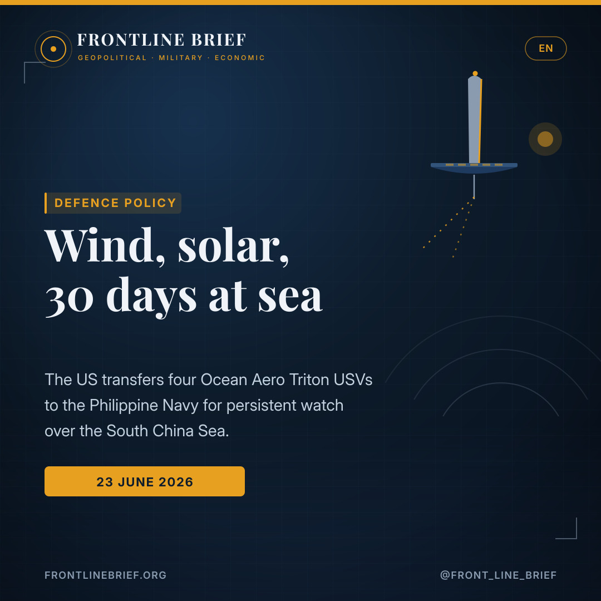

Wind, solar and 30 days at sea: the US hands the Philippine Navy Ocean Aero's Triton drones
Four wind- and solar-powered Ocean Aero Triton vehicles have been transferred to the Philippine Navy under a US-funded initiative. Able to stay at sea for up to 30 days and watch both above and below the surface, they are built for the kind of cheap, persistent awareness an archipelagic nation needs in the contested South China Sea.



Four Tritons at Subic Bay
Four Ocean Aero Tritons were handed to the Philippine Navy's Unmanned Surface Vessel Unit One at Naval Operating Base Subic Bay, through a US-funded security assistance initiative.
Up to 30 days on station
Powered by wind and solar, the Triton can persist at sea for up to 30 days, monitoring the surface and underwater and carrying side-scan sonar, passive acoustic sensors and other payloads.
Watching the gray zone
The drones are meant to give Manila persistent awareness across a vast archipelago and EEZ, countering Chinese gray-zone activity and monitoring critical seabed infrastructure.
Four drones for Subic Bay
The Philippine Navy's drone unit has grown again. Four Ocean Aero Triton autonomous vehicles were officially handed over to the Unmanned Surface Vessel Unit One at Naval Operating Base Subic Bay, transferred through a US-funded initiative. The handover continues Washington's steady flow of unmanned systems to Manila as the Armed Forces of the Philippines seek to sharpen their detection and tracking amid repeated maritime standoffs with Beijing in the South China Sea.
A different kind of sea drone
The Triton is not a conventional underwater vehicle. Powered by wind and solar panels, it can operate for up to 30 days at a time, persistently monitoring activity on the surface and below it. Unlike battery-bound underwater drones that need frequent recovery, it can simply stay on station, continuously collecting and transmitting data with a minimal logistics footprint. It can be launched from boat ramps, other vessels, forward operating bases and remote islands.
Unlike battery-bound underwater drones, the Triton can simply stay — weeks on station, powered by wind and sun, watching the surface and the deep.
Why the Philippines wants them
For an archipelagic nation, the appeal is persistence at low cost. Ocean Aero's Andre Morabe told Naval News that the system addresses "persistent maritime awareness at ultra-low cost and low logistics burden", a critical gap for a country that has to watch thousands of islands and a vast exclusive economic zone. A US Embassy statement framed the transfer around countering gray-zone activities and threats to freedom of navigation.
Sensors and seabed warfare
The platform's value lies in what it carries. The Triton can take side-scan sonar, passive acoustic sensors, navigation systems and other specialised payloads, which makes it suited to detecting threats, monitoring critical infrastructure and supporting seabed warfare. In waters criss-crossed by cables and pipelines, and contested by a far larger neighbour, that combination of endurance and sensing is exactly what Manila lacks.
A growing unmanned fleet
The Tritons do not arrive alone. They join unmanned surface vessels already supplied to the Philippine Navy by another American firm, Maritime Tactical Systems, whose Mantis T-12 and Devil Ray T-38 craft are also operated by Unmanned Surface Vessel Unit One. Piece by piece, with US backing, the Philippines is assembling a small but purpose-built drone navy for the South China Sea.
Τέσσερα drones για το Subic Bay
Η μονάδα μη επανδρωμένων του Φιλιππινέζικου Ναυτικού μεγάλωσε ξανά. Τέσσερα αυτόνομα οχήματα Ocean Aero Triton παραδόθηκαν επίσημα στη Μονάδα Μη Επανδρωμένων Επιφανείας Ένα στη Ναυτική Βάση Subic Bay, μέσω πρωτοβουλίας χρηματοδοτούμενης από τις ΗΠΑ. Η παράδοση συνεχίζει τη σταθερή ροή μη επανδρωμένων συστημάτων προς τη Μανίλα, καθώς οι Ένοπλες Δυνάμεις των Φιλιππίνων επιδιώκουν να βελτιώσουν τον εντοπισμό και την παρακολούθηση εν μέσω επανειλημμένων θαλάσσιων αναμετρήσεων με το Πεκίνο στη Νότια Σινική Θάλασσα.
Ένα διαφορετικό θαλάσσιο drone
Το Triton δεν είναι συμβατικό υποβρύχιο όχημα. Τροφοδοτούμενο από τον άνεμο και ηλιακά πάνελ, μπορεί να λειτουργεί έως και 30 ημέρες κάθε φορά, παρακολουθώντας διαρκώς τη δραστηριότητα στην επιφάνεια και κάτω από αυτήν. Σε αντίθεση με τα υποβρύχια drones που εξαρτώνται από μπαταρίες και απαιτούν συχνή ανάκτηση, μπορεί απλώς να παραμένει στη θέση του, συλλέγοντας και μεταδίδοντας δεδομένα συνεχώς με ελάχιστο υλικοτεχνικό αποτύπωμα. Μπορεί να εκτοξεύεται από ράμπες σκαφών, άλλα πλοία, προωθημένες βάσεις και απομακρυσμένα νησιά.
Σε αντίθεση με τα υποβρύχια drones που δεσμεύονται από μπαταρίες, το Triton απλώς μένει — εβδομάδες στη θέση του, με άνεμο και ήλιο, παρακολουθώντας την επιφάνεια και τον βυθό.
Γιατί τα θέλουν οι Φιλιππίνες
Για ένα νησιωτικό κράτος, το ζητούμενο είναι η διάρκεια με χαμηλό κόστος. Ο Andre Morabe της Ocean Aero δήλωσε στο Naval News ότι το σύστημα προσφέρει «διαρκή θαλάσσια εικόνα με εξαιρετικά χαμηλό κόστος και ελαφρύ υλικοτεχνικό βάρος», ένα κρίσιμο κενό για μια χώρα που πρέπει να επιτηρεί χιλιάδες νησιά και μια τεράστια Αποκλειστική Οικονομική Ζώνη. Ανακοίνωση της πρεσβείας των ΗΠΑ τοποθέτησε τη μεταβίβαση γύρω από την αντιμετώπιση δραστηριοτήτων «γκρίζας ζώνης» και απειλών κατά της ελευθερίας ναυσιπλοΐας.
Αισθητήρες και πόλεμος βυθού
Η αξία της πλατφόρμας βρίσκεται σε ό,τι μεταφέρει. Το Triton μπορεί να φέρει σόναρ πλευρικής σάρωσης, παθητικούς ακουστικούς αισθητήρες, συστήματα πλοήγησης και άλλα εξειδικευμένα φορτία, κάτι που το καθιστά κατάλληλο για εντοπισμό απειλών, παρακολούθηση κρίσιμων υποδομών και υποστήριξη επιχειρήσεων πολέμου βυθού. Σε νερά που διασχίζονται από καλώδια και αγωγούς, και αμφισβητούνται από έναν πολύ μεγαλύτερο γείτονα, αυτός ο συνδυασμός αντοχής και αισθητήρων είναι ακριβώς αυτό που λείπει από τη Μανίλα.
Ένας αναπτυσσόμενος μη επανδρωμένος στόλος
Τα Triton δεν φτάνουν μόνα τους. Προστίθενται σε μη επανδρωμένα σκάφη επιφανείας που έχει ήδη προμηθεύσει στο Φιλιππινέζικο Ναυτικό μια άλλη αμερικανική εταιρεία, η Maritime Tactical Systems, της οποίας τα σκάφη Mantis T-12 και Devil Ray T-38 χρησιμοποιεί επίσης η Μονάδα Μη Επανδρωμένων Επιφανείας Ένα. Κομμάτι κομμάτι, με αμερικανική στήριξη, οι Φιλιππίνες συγκροτούν ένα μικρό αλλά ειδικά σχεδιασμένο μη επανδρωμένο ναυτικό για τη Νότια Σινική Θάλασσα.
Quatre drones pour Subic Bay
L'unité de drones de la marine philippine s'est encore étoffée. Quatre véhicules autonomes Ocean Aero Triton ont été officiellement remis à l'Unité de véhicules de surface sans pilote n°1 à la base navale de Subic Bay, transférés dans le cadre d'une initiative financée par les États-Unis. Cette remise prolonge le flux régulier de systèmes sans pilote de Washington vers Manille, alors que les forces armées philippines cherchent à affiner leur détection et leur suivi au milieu de tensions maritimes répétées avec Pékin en mer de Chine méridionale.
Un drone marin d'un autre genre
Le Triton n'est pas un véhicule sous-marin classique. Alimenté par le vent et des panneaux solaires, il peut fonctionner jusqu'à 30 jours d'affilée, surveillant en continu l'activité en surface et en profondeur. Contrairement aux drones sous-marins tributaires de batteries, qui exigent des récupérations fréquentes, il peut simplement rester en zone, collectant et transmettant des données en permanence avec une empreinte logistique minimale. Il peut être lancé depuis des rampes, d'autres navires, des bases avancées et des îles isolées.
Contrairement aux drones sous-marins limités par leurs batteries, le Triton peut simplement rester — des semaines sur zone, mû par le vent et le soleil, surveillant la surface et les fonds.
Pourquoi les Philippines en veulent
Pour une nation archipélagique, l'atout est la persistance à faible coût. Andre Morabe, d'Ocean Aero, a déclaré à Naval News que le système répond à « une connaissance maritime persistante à très faible coût », une lacune critique pour un pays qui doit surveiller des milliers d'îles et une vaste zone économique exclusive. Un communiqué de l'ambassade des États-Unis a présenté ce transfert sous l'angle de la lutte contre les activités de la zone grise et les menaces à la liberté de navigation.
Capteurs et guerre des fonds marins
La valeur de la plateforme tient à ce qu'elle emporte. Le Triton peut recevoir un sonar à balayage latéral, des capteurs acoustiques passifs, des systèmes de navigation et d'autres charges utiles spécialisées, ce qui le rend apte à détecter des menaces, surveiller les infrastructures critiques et soutenir la guerre des fonds marins. Dans des eaux sillonnées de câbles et de pipelines, et disputées par un voisin bien plus grand, cette combinaison d'endurance et de capteurs est précisément ce qui manque à Manille.
Une flotte sans pilote en expansion
Les Triton n'arrivent pas seuls. Ils rejoignent des véhicules de surface sans pilote déjà fournis à la marine philippine par une autre firme américaine, Maritime Tactical Systems, dont les engins Mantis T-12 et Devil Ray T-38 sont aussi exploités par l'Unité n°1. Pièce par pièce, avec l'appui américain, les Philippines assemblent une petite marine de drones taillée pour la mer de Chine méridionale.
Fire droner til Subic Bay
Den filippinske flådes droneenhed er vokset igen. Fire autonome Ocean Aero Triton-fartøjer blev officielt overdraget til Enheden for Ubemandede Overfladefartøjer Et på flådebasen Subic Bay, overført gennem et USA-finansieret initiativ. Overdragelsen fortsætter Washingtons stabile strøm af ubemandede systemer til Manila, mens Filippinernes væbnede styrker søger at skærpe deres opdagelse og sporing midt i gentagne maritime sammenstød med Beijing i Det Sydkinesiske Hav.
En anden slags havdrone
Triton er ikke et konventionelt undervandsfartøj. Drevet af vind og solpaneler kan den operere i op til 30 dage ad gangen og vedvarende overvåge aktivitet på overfladen og under den. I modsætning til batteribundne undervandsdroner, der kræver hyppig bjærgning, kan den blot blive i området og løbende indsamle og sende data med et minimalt logistisk fodaftryk. Den kan søsættes fra bådramper, andre fartøjer, fremskudte baser og fjerntliggende øer.
I modsætning til batteribundne undervandsdroner kan Triton bare blive — uger i området, drevet af vind og sol, med blik på overfladen og dybet.
Hvorfor Filippinerne vil have dem
For en ønation er tiltrækningen vedholdenhed til lave omkostninger. Ocean Aeros Andre Morabe sagde til Naval News, at systemet leverer »vedvarende maritim situationsforståelse til ekstremt lave omkostninger«, et kritisk hul for et land, der skal overvåge tusindvis af øer og en enorm eksklusiv økonomisk zone. En udtalelse fra den amerikanske ambassade satte overdragelsen ind i en ramme om at imødegå gråzoneaktiviteter og trusler mod sejladsfriheden.
Sensorer og havbundskrig
Platformens værdi ligger i, hvad den bærer. Triton kan medføre sidescanningssonar, passive akustiske sensorer, navigationssystemer og andre specialiserede nyttelaster, hvilket gør den egnet til at opdage trusler, overvåge kritisk infrastruktur og støtte havbundskrig. I farvande gennemkrydset af kabler og rørledninger, og bestridt af en langt større nabo, er netop denne kombination af udholdenhed og sensorer, hvad Manila mangler.
En voksende ubemandet flåde
Triton-fartøjerne ankommer ikke alene. De slutter sig til ubemandede overfladefartøjer, som allerede er leveret til den filippinske flåde af et andet amerikansk firma, Maritime Tactical Systems, hvis Mantis T-12 og Devil Ray T-38 også betjenes af Enhed Et. Stykke for stykke, med amerikansk støtte, samler Filippinerne en lille, men målrettet dronemarine til Det Sydkinesiske Hav.
Fyra drönare till Subic Bay
Filippinska flottans drönarenhet har växt igen. Fyra autonoma Ocean Aero Triton-farkoster överlämnades officiellt till Enheten för obemannade ytfarkoster Ett vid flottbasen Subic Bay, överförda genom ett USA-finansierat initiativ. Överlämnandet fortsätter Washingtons stadiga ström av obemannade system till Manila, medan Filippinernas försvarsmakt söker skärpa sin upptäckt och spårning mitt i upprepade maritima sammandrabbningar med Peking i Sydkinesiska havet.
En annan sorts havsdrönare
Triton är inte en konventionell undervattensfarkost. Driven av vind och solpaneler kan den verka i upp till 30 dygn i taget och oavbrutet övervaka aktivitet på ytan och under den. Till skillnad från batteribundna undervattensdrönare som kräver frekvent bärgning kan den helt enkelt stanna i området och kontinuerligt samla in och sända data med ett minimalt logistiskt fotavtryck. Den kan sjösättas från båtramper, andra fartyg, framskjutna baser och avlägsna öar.
Till skillnad från batteribundna undervattensdrönare kan Triton bara stanna — veckor i området, driven av vind och sol, med blick på ytan och djupet.
Varför Filippinerna vill ha dem
För en önation är dragningskraften uthållighet till låg kostnad. Ocean Aeros Andre Morabe sade till Naval News att systemet ger "ihållande maritim lägesbild till extremt låg kostnad", en kritisk lucka för ett land som måste bevaka tusentals öar och en väldig exklusiv ekonomisk zon. Ett uttalande från USA:s ambassad ramade in överföringen kring att motverka gråzonsaktiviteter och hot mot sjöfartsfriheten.
Sensorer och havsbottenkrig
Plattformens värde ligger i vad den bär. Triton kan medföra sidescanningssonar, passiva akustiska sensorer, navigationssystem och andra specialiserade nyttolaster, vilket gör den lämplig för att upptäcka hot, övervaka kritisk infrastruktur och stödja havsbottenkrigföring. I vatten genomkorsade av kablar och rörledningar, och omstridda av en långt större granne, är just denna kombination av uthållighet och sensorer vad Manila saknar.
En växande obemannad flotta
Triton-farkosterna kommer inte ensamma. De ansluter sig till obemannade ytfarkoster som redan levererats till filippinska flottan av ett annat amerikanskt företag, Maritime Tactical Systems, vars Mantis T-12 och Devil Ray T-38 också används av Enhet Ett. Bit för bit, med amerikanskt stöd, sätter Filippinerna samman en liten men ändamålsbyggd drönarflotta för Sydkinesiska havet.
Sources
- Naval News — U.S. Transfers Ocean Aero Tritons to Philippine Navy USV Unit (Aaron-Matthew Lariosa, 23 June 2026)
- U.S. Embassy in the Philippines — release on Triton unmanned systems transfer
- Ocean Aero — Triton autonomous underwater and surface vehicle